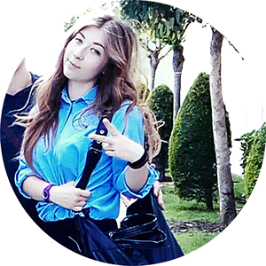

Яна Драпач
Работала с ребятами хоть и не с начала сезона, но все же супер!
Дружная команда (мы работали в Мини-клубе), провели отличный сезон в Delphin Вotanik, а последний месяц в Delphin Imperial меня перевели на спорт, там есть свои особенности, но физически тяжело с постоянной нагрузкой и сразу появляется аппетит)) девчонки умнички да и сейчас собираемся, продолжаем общаться. Рекомедую!!!!
Кирилл Ерошкин
Я работал с юниорами и на спорте со взрослыми, при чем получилось побывать в двух отелях, поработать с разными интернациональными командами. Да, проблемы были в общении, т. к. в целом не все турки понимают английский (языковой барьер), но к концу сезона и это разрешилось.
Анна Власюк
Мы приехали еще в апреле и работали до самого закрытия сезона, погода позволяла. Начальница мини-клуба (Мила) с турчанкой (Эбру) помогли освоиться, всему обучили и буквально за 2 недели уже было понятно кто за что отвечает. Для меня самым тяжелым было рисовать аквагрим, первое время приходилось спрашивать, нравятся ли мои рисунки детям))) А потом втянулась и бывало, что приходилось даже импровизировать.
Ника Бурханова
Я работала спорт аниматором в Delphin Bptanik. Мне это очень нравится, да и я до сих пор тут работаю с июня месяца. Работа интересная, но морально сложновато — одно и то же, а гости приезжают на 2 недели и для в них все в диковинку. За лето появилось много друзей, куча новый воспоминаний. Мне очень нравится!
София Приходько
Анимация — это новая, сложная, веселая жизнь. В целом, мне понравилось, интересно, ты в другой стране, другие люди. Через время все это становится домом. Работа детским аниматором не сложная, все очень даже реально. Правда, вечно хочется спать, но это уже другая сторона медали. Так же я работала взрослым аниматором, очень круто!!), но физически сложно, нужно ехать подготовленным. Есть конечно плюсы и минусы, для меня — это был выходной, он всего один (ну это ладно), но до 19.00, а в 20.00 ты снова идешь на работу. Этот факт бесил, наверное, всех наших девочек. Сейчас, спустя 1,5 месяца дома, я бы поехала снова. А в день, когда все уезжали, возвращаться не хотелось вообще.

Юлия Коваленко
Я работала спортивным аниматором в одном из лучших отелей Delphin Deluxe. Если вы любите спорт и активный образ по жизни, тогда эта работа именно для вас. Хочу сразу сказать, нужно ехать подготовленным, не переживайте, если Вы в этом деле новичок, шефы отелей помогут вам и все расскажут. Так что пробуйте, я уверенна вам понравится.
Юлия Зайцева
Я являюсь основателем компании «Paradise Wave» и в свое время также работала в детской анимации. Скажу честно - работа ответственная, т.к. требует особого внимания и подхода к детям, умения найти общий язык и привлечь азарт к проводимым активити.
В целом, система Дельфина имеет специфический подход к анимации, любые проблемы (даже личностного характера) разбираются индивидуально, что не всегда встретишь и в Украине. Родители могут быть спокойны за свое чадо, по скольку, большое количество запретов (например, выходной до 19.00) основаны только на предыдущем опыте прошлых лет. Забота о своих сотрудниках, предоставление нормальных условий проживания, питания, организация поездок в город или на шоппинг — являются визитной карточкой данной системы. Мы всегда радостно приветствуем в новом сезоне наших «старичков» .
Артем Новосельцев
Всем привет, меня зовут Артем! Этим летом я работал в Турции в отеле Delphin Imperial. Сразу стоит отметить (чтобы вы не строили в дальнейшем иллюзий), что я именно работал, а не отдыхал. Каждое утро я просыпался в 8.30, в 9.00 завтракал, а в 10.00 приступал к работе. Все начиналось с Good Morning тура, когда мы ходили и приветствовали гостей, а затем с 10.30 до 17.00 я вел активити, с перерывом на обед с 12.30 до 14.30. С 20.00 до 24.00 ты общаешься с гостями во время вечернего шоу и живой музыки. В обед я должен был общаться и обедать с гостями. Так как большую часть сезона я работал в юниор клубе аниматором, в обязанности мои входило: организовать юниоров (12-17 лет) на водное поло, водные игры, дартс, волейбол и футбол. В целом работа очень интересная, ты встречаешь и общаешься с людьми из многих стран мира, есть возможность купаться в море, ездить по магазинам и тому подобное. Но были некоторые минусы:неполный выходной день (с 20.00 ты должен снова работать), на море и в город можно только на выходных, общаться можно только с мужчинами или пожилыми людьми. Если б не такого рода ограничения, то работу в этом отеле можно было бы назвать идеальной.